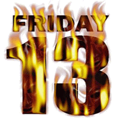

|  | Uitslag 18de FAMILIEQUIZ (vrijdag 13 februari 2009) |
| Pl. | Nr. | Ploeg | T |
| 1 | 39 | BLACKOUT | 107 |
| 2 | 11 | Old And B-Youth-iful | 103 |
| 3 | 16 | De Freewheelers | 102 |
| 4 | 21 | Soep met letterkes | 101* |
| 5 | 27 | Kleurenw(h)ist | 101* |
| 6 | 30 | NFP | 101* |
| 7 | 37 | Chez José | 100 |
| 8 | 24 | NIVEAU NIHIL | 99* |
| 9 | 7 | Sjareltje Vuylsteke | 99* |
| 10 | 26 | amnesia | 97 |
| 11 | 29 | Mannen weten waarom | 96 |
| 12 | 15 | Tsjinglepipikoekoek | 95* |
| 13 | 25 | intel inside | 95* |
| 14 | 38 | Les Mariposas | 93 |
| 15 | 20 | Ouderraad | 92 |
| 16 | 13 | the O' Dhrama's | 91 |
| 17 | 1 | De pasteelkielekes | 90* |
| 18 | 9 | Always Coca Cola | 90* |
| 19 | 8 | Costa Nostra | 87 |
| 20 | 42 | El Bouli | 85 |
| 21 | 12 | De afrekening | 83* |
| 22 | 18 | dawistenutoch | 83* |
| 23 | 33 | De Chill Winners | 82* |
| 24 | 22 | Vrijdag de dertiende | 82* |
| 25 | 17 | Zonnebloempje 1 | 82* |
| 26 | 19 | Trinitrotolueen | 81* |
| 27 | 5 | Geen Idee | 81* |
| 28 | 43 | De Reservebank | 81* |
| 29 | 6 | Sei Stragioni | 80 |
| 30 | 31 | de aanhouders | 78* |
| 31 | 28 | Zonnebloempje 2 | 78* |
| 32 | 41 | F.C. Waterpijp | 76 |
| 33 | 36 | Zoek Wally! | 75 |
| 34 | 32 | WeDoItOurFuckingWay | 74 |
| 35 | 23 | Helaas Pindakaas | 73 |
| 36 | 14 | gansjes en grietje | 72* |
| 37 | 10 | GSE | 72* |
| 38 | 4 | TJOELERS | 71 |
| 39 | 3 | Foutje van de firma | 70 |
| 40 | 2 | The Golden Drop | 69 |
| 41 | 35 | Locomostoomfantjes | 66 |
| 42 | 34 | The T-Birds | 61 |
| 43 | 40 | Schattenjagers | 57 |